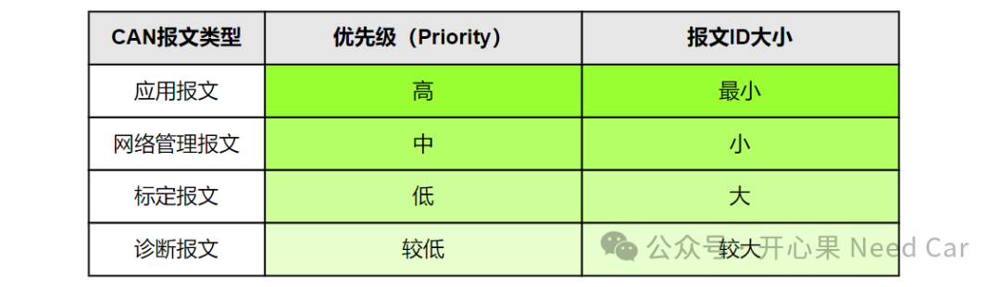
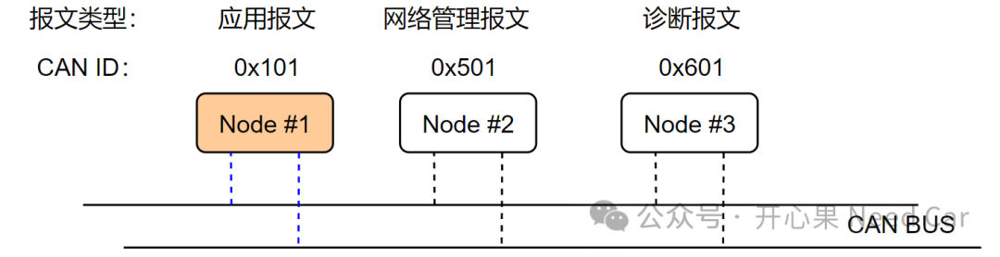
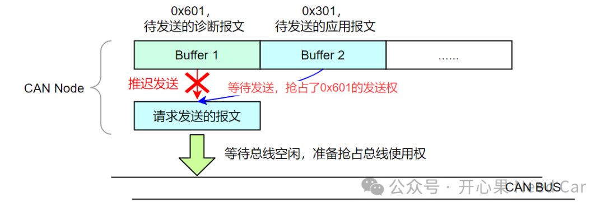
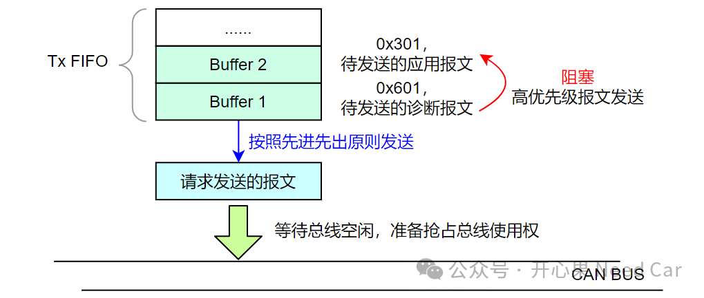
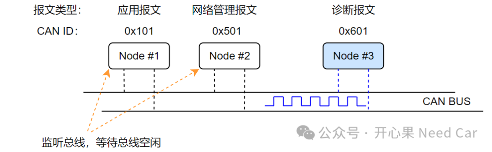
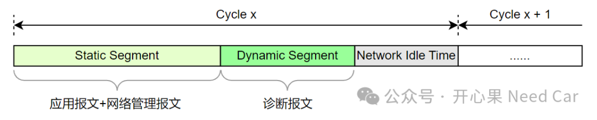

开心果 Need Car · 2024-06-26T06:46:00+08:00 · 微信原文
1、报文分类

CAN总线采用CSMA（Carrier Sense Multiple Access，载波监听多路访问）+"线与"的机制进行总线抢占，即：报文ID越小，优先级越高，越能优先抢占总线，示意如下：

2、CAN诊断报文对通信影响
同一个时刻，如果诊断报文、应用报文、网络管理报文均需要使用总线，它们会进行总线仲裁，由于应用报文CANID小，优先抢占到总线，诊断报文和低优先级报文只能被迫转为监听状态，等待下一次总线仲裁。但是，Node #3没有发送出去诊断报文就真的没有对通信造成影响吗？是否造成影响，需要分情况讨论：
（一）对本节点的影响
由于诊断报文没有发送出去，发送诊断报文的节点还会继续监听总线，等待总线空闲时发送。如果在诊断报文等待总线空闲期间，本节点又要发送高优先级的应用报文，在没有使用FIFO的前提下，诊断报文会让出请求发送权，让本节点的应用报文先发送，之后再发送自身的诊断报文或者低优先级报文，这对本节点的通信实时性影响较小。但是，如果本节点采用FIFO的发送模式，本节点的应用报文只能等待诊断报文发送后才能发送，如此，诊断报文会对本节点的应用报文发送的实时性产生影响，示意如下：

如果节点CAN的发送缓冲区，采用FIFO模式发送，那么先进入队列的低优先级诊断报文会阻塞后进入队列的高优先级应用报文发送，进而对应用报文的通信实时性产生影响，示意如下：


3、Flexray诊断报文对通信影响

往期精彩回顾